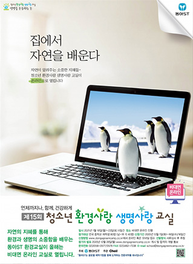

생명사랑교실
따옴표 청소년 환경사랑 생명사랑 교실은 미래의 환경지킴이를 양성합니다. 따옴표
- 떠나지 않고도
자연을 만나는 방법 - 자연의 소중함을 알려주는 청소년 환경사랑 생명사랑 교실이 열립니다.
- *프로그램 일정의 경비는 모두 주최측(동아ST)이 부담합니다.
청소년 환경사랑 생명사랑 교실 (2004~현재)
15회 청소년 환경사랑 생명사랑 교실 포스터
- 행사명
- 청소년 환경사랑 생명사랑 교실
- 참가대상
- 전국 남녀 중학생(기 참가자 제외)
- 참가접수
- 매년 5~6월
- 선발인원
- 전국 중학교 재학생 80명 (남, 여 각 40명)
- 선발방식
- 소정의 서류심사 후 추첨
- 신청방법
- www.dongagreencamp.co.kr에서 온라인 접수
'모바일에서도 참가신청이 가능합니다.'
- 혜택
- 선발인원에 한하여 행사 진행에 필요한 기념품 발송
청소년 환경사랑 생명사랑 교실(이하 ‘환경교실’)은 참가 접수를 받아 선발된 남녀 중학생 각 30명씩, 총 60명의 참가자들이 4박 5일간 자연 속에서 환경의 소중함, 환경 보호 실천방법을 배우고 느끼는 행사입니다. 2004년 시작된 환경교실은 미래의 주인인 청소년들이 날로 파괴되고 있는 자연의 소중함을 스스로 깨닫고 환경 보호를 생활 속에서 실천하도록 하기 위해 시작되었습니다.
과도한 입시경쟁 속에 묻혀 있는 요즘 청소년들에게 본 행사는 산과 강, 들판과 같은 우리네 아름다운 자연을 직접 체험할 수 있는 기회를 제공하며 무심코 지나칠 수 있는 풀 한 포기, 작은 곤충 한 마리의 소중함을 일깨우고 있습니다. 참가자들은 산과 강 등 자연의 생태에 대해 배우고 또래 친구들과 토의할 수 있는 시간을 갖는 것은 물론, 직접 자연 속으로 나가 산과 하천 등에서 생태 체험을 합니다.
Nature또, 매년 환경교실에서는 ‘숲 속의 작은 음악회’를 열어 자연 속에서 아름다운 선율과 하나되는 특별한 체험을 제공하며, 참가자들이 환경교실에 참가하며 배우고 느낀 점을 토대로 ‘Green Paper’를 작성해 발표하는 것으로 행사를 마치게 됩니다. 환경교실은 무엇보다 자라나는 청소년들이 점점 심화되는 환경 훼손, 환경 파괴에 대해 관심을 갖고 본인이 스스로 환경지킴이가 되는 것은 물론, 행사에 참가하며 보고 배운 것을 가족과 지인들에게 전파하는 것을 목적으로 하고 있습니다.
Protect